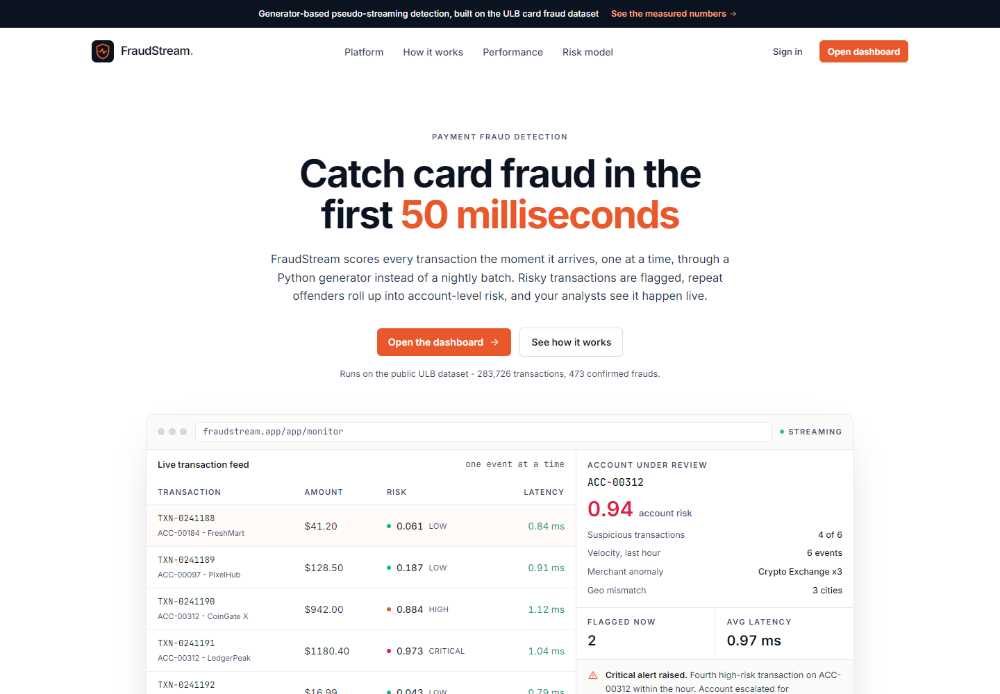
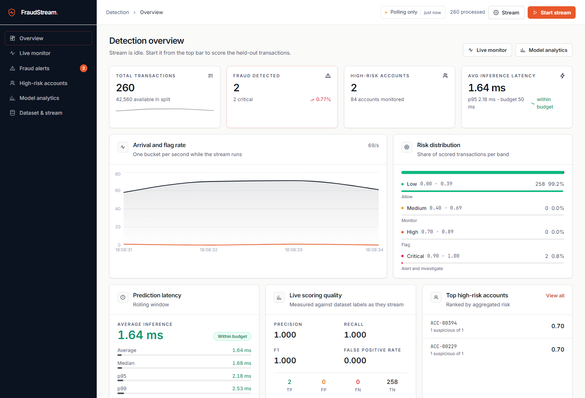
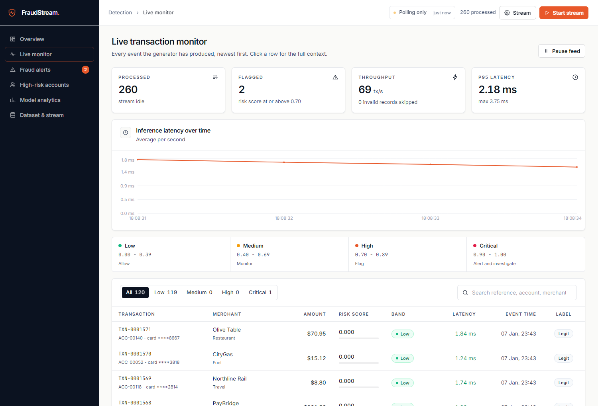
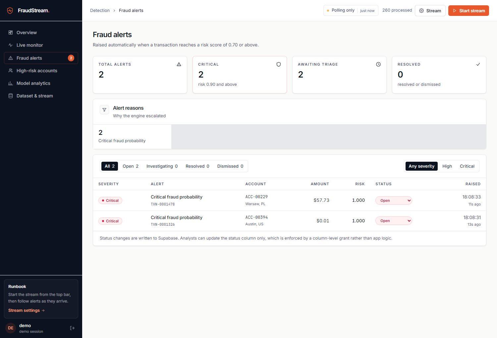
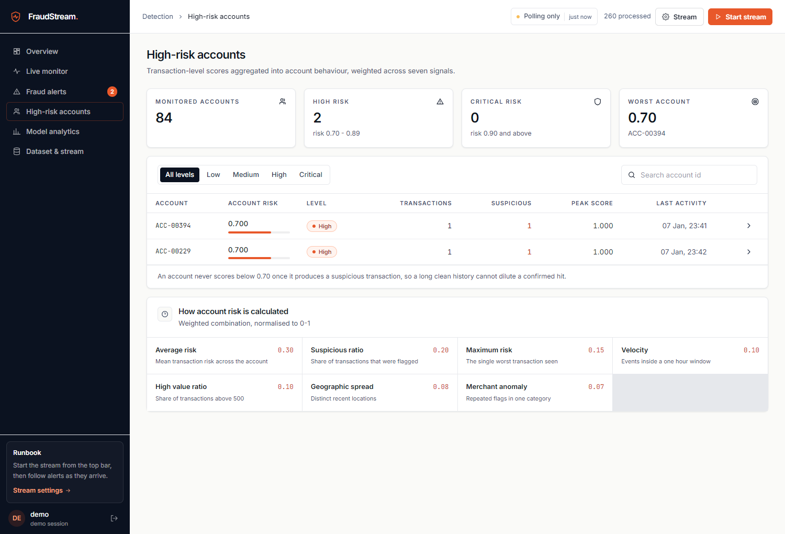
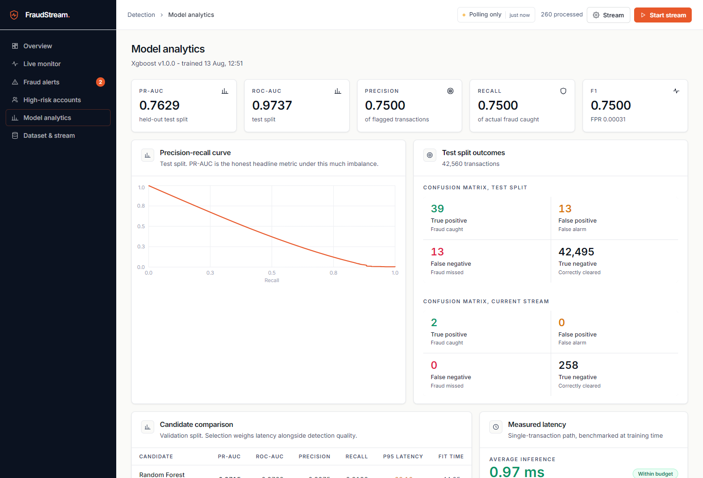

A complete review of the product requirements, machine-learning pipeline, pseudo-streaming engine, API, React dashboard, Supabase security model, testing evidence, and deployment readiness.
This report separates code-complete behavior from behavior that requires a live third-party service or production deployment.
| Status | Meaning in this report |
|---|---|
| Implemented | Concrete source implementation and local evidence exist. |
| Partial | Material parts exist, but at least one requirement or operational property is incomplete. |
| Unverified externally | Integration code/configuration exists, but the required live Supabase, GitHub, or deployment behavior was not demonstrable without user accounts and credentials. |
| Not implemented | No substantive implementation or delivery evidence was found. |
Report inputs: every project-owned source, config, documentation, test, migration, seed, manifest, metadata, and operational tool file. Generated/vendor/binary/large-data artifacts were excluded from text review but their presence and metadata were recorded.
FraudStream AI is a credible, measured fraud-detection demo with a genuine one-event-at-a-time stream, a trained imbalance-aware model, a coherent risk engine, and a comprehensive analyst console.
No credit for externally unverified claims
XGBoost on untouched chronological test split
50 ms target; 31× headroom
473 frauds · 0.1667%
csv.DictReader generator; one record transformed and predicted per iteration.| Category | Implemented | Partial | External | Not built | Weighted |
|---|---|---|---|---|---|
| Functional requirements (14) | 8 | 4 | 2 | 0 | 71.4% |
| Performance requirements (5) | 1 | 3 | 1 | 0 | 50.0% |
| Success criteria (10) | 5 | 2 | 2 | 1 | 60.0% |
| Constraint groups (15) | 6 | 7 | 1 | 1 | 63.3% |
| Final deliverables (14) | 10 | 0 | 2 | 2 | 71.4% |
| Total (58) | 30 | 16 | 8 | 4 | 65.5% |
The audit covered 121 owned files. Exclusions were limited to dependencies, generated builds/logs, large CSV content, caches, and binary model artifacts.
React source, configuration, manifests and lockfile.
Python source, tests, metadata, config and scripts.
19 tools, 5 docs, 4 Supabase, 3 root/governance.
| Area | Count | Reviewed content |
|---|---|---|
| Root & governance | 3 | .gitignore, root README, GitHub Actions CI. |
| Documentation | 5 | PRD, architecture, API, model card, deployment guide. |
| Frontend | 45 | 10 manifests/config files; entry and CSS; 9 pages; shared, app, and landing components; auth/stream contexts; API client; routing/hooks/utilities; favicon and asset notes. |
| ML engine & backend | 45 | 27 source modules across API, preprocessing, features, training, inference, streaming, risk and persistence; 7 test files; smoke script; metadata; manifests/config/readmes/placeholders. |
| Supabase | 4 | Initial migration, seed SQL, setup README, functions placeholder README. |
| Operational tooling | 19 | PowerShell and Node helpers for installation, training, indexing, builds, servers, screenshots, smoke tests, UI flows, 404 checks, and aggregate verification. |
| Excluded artifact | Reason | Evidence retained |
|---|---|---|
frontend/node_modules, ml-engine/.venv | Third-party/vendor code | Pinned manifests, lockfile, installed runtime use and successful validations. |
frontend/dist, caches | Generated build output | Production build log: 991 modules, successful in 3.39 s. |
logs/, screenshots | Generated verification artifacts | Validation logs and selected screenshots inspected as evidence. |
*.joblib | Binary trusted artifacts | Presence plus full model_metadata.json; successful runtime loading. |
creditcard.csv, stream_test.csv | Large data, ~150 MB raw input | Schema, cleaning report, profile, split/index metadata, row counts and end-to-end streaming evidence. |
React 16 consumes a FastAPI detection engine through authenticated HTTP polling and, when configured, consumes database changes directly through Supabase Realtime.
training/train.py loads, cleans, chronologically splits, engineers features, fits preprocessing, trains candidates, tunes thresholds, benchmarks one-record serving, evaluates the selected model, and writes the model, preprocessor, metadata, profile, held-out stream, and fraud index.
StreamProcessor owns one background stream thread. It asks the lazy generator for one valid event, invokes the process-wide predictor, maps probability to risk, updates account state, records bounded in-memory metrics, and enqueues optional database writes.
StreamContext loads reference data, polls four dashboard endpoints every 2 seconds while active and 8 seconds while idle, and merges Realtime transaction, alert, and account updates when Supabase is present.
Uvicorn serves requests; one pseudo-stream thread processes transactions; one supabase-writer thread batches network writes. Inference is isolated from network latency, but the design requires one process/worker.
| Decision | Reason | Consequence |
|---|---|---|
| Chronological split | Prevents future transactions entering historical training. | Better leakage control; test fraud count is only 52. |
| Generator + scalar inference | Meets FR-008 and supports per-event latency and clean stop. | Lower throughput than vectorized batch scoring by design. |
| Asynchronous persistence | Supabase network time must not consume the 50 ms inference budget. | Queue/failure semantics require production hardening. |
| In-memory live state | Fast local dashboard and no mandatory external service. | History and account behavior are lost on restart. |
| Polling plus Realtime | Local fallback without Supabase; push updates when provisioned. | Two merge paths can temporarily produce shape differences. |
| Synthetic display identity | ULB data has no account, merchant or location fields. | Account risk demonstrates mechanism, not production identity accuracy. |
The ULB credit-card dataset is cleaned, sorted by elapsed time, and split without shuffling. Performance is reported with precision-recall metrics rather than misleading accuracy.
| Split | Rows | Frauds | Time range | Use |
|---|---|---|---|---|
| Train · 70% | 198,608 | 366 | 0–132,906 s | Fit preprocessing and candidate estimators. |
| Validation · 15% | 42,558 | 55 | 132,906–151,320 s | Tune thresholds and compare model quality. |
| Test · 15% | 42,560 | 52 | 151,320–172,792 s | Final evaluation and pseudo-stream replay. |
Train 70% · Validation 15% · Test 15%; sorted by Time, never shuffled.
V1…V28.amount and log_amount.seconds_of_day, hour_of_day, is_night.Class.These are synthetic display/aggregation attributes and are excluded to prevent leakage. Metadata reports an empty offending-column list.
| Candidate | PR-AUC | ROC-AUC | Precision | Recall | p95 | Fit |
|---|---|---|---|---|---|---|
| Random forest | 0.8715 | 0.9783 | 0.9375 | 0.8182 | 33.16 ms | 44.05 s |
| XGBoost · selected | 0.8472 | 0.9880 | 0.8824 | 0.8182 | 1.76 ms | 4.85 s |
| Logistic regression | 0.8414 | 0.9817 | 0.8431 | 0.7818 | 2.23 ms | 1.09 s |
| Isolation forest | 0.0553 | 0.9541 | 0.0812 | 0.5273 | 6.13 ms | 1.97 s |
The selected threshold is 0.184152, tuned on validation to maximize F2 subject to precision of at least 0.50.
| Predicted fraud | Predicted legitimate | |
|---|---|---|
| Actually fraud | 39 · TP | 13 · FN |
| Actually legitimate | 13 · FP | 42,495 · TN |
39 of 52 frauds were detected, with 13 false alarms among 42,508 legitimate transactions. False-positive rate: 0.000306.
| Average | 0.9739 ms |
| Median | 0.9185 ms |
| p95 | 1.588 ms |
| p99 | 1.932 ms |
| Maximum | 2.2913 ms |
| Target | < 50 ms · pass |
Because an imbalance-weighted raw probability does not align naturally to the PRD’s fixed bands, a monotonic piecewise mapping sends raw probability 0 to risk 0, the tuned threshold to risk 0.70, and probability 1 to risk 1. This guarantees a model-positive event lands in high or critical risk.
The generator reads and validates one CSV row at a time. The processor makes exactly one prediction per valid event and supports stop, skip, delay, limits, and invalid-row continuation.
csv.DictReader, no DataFrame batch load.| Group | Endpoints | Behavior |
|---|---|---|
| System | GET /api/health | Public readiness, model/data/Supabase/auth state and uptime. |
| Detection | POST /api/predict | One transaction; missing PCA fields default to zero with completeness reported. |
| Stream | POST /stream/start, /stop, GET /status | Single concurrent stream; 409 on duplicate start; validated bare CSV source names. |
| Dashboard | /metrics, /transactions/recent, /alerts, /accounts | Bounded process-memory views plus alert status triage. |
| Reference | GET /model, /dataset/info | Evaluation metadata, live quality, profile, artifact and fraud-index information. |
| Upload | POST /dataset/upload | Chunked 250 MB maximum; constrained filename/extension; stored under uploads. |
.., absolute paths and non-CSV names.The React 16 application has a measured public landing page, Supabase authentication wiring, a protected lazy-loaded console, responsive navigation, and six core operational views plus dataset controls.

| View | Primary capabilities |
|---|---|
| Login | Email sign-in/sign-up, password reset, session restoration, return URL, local demo mode. |
| Overview | KPIs, throughput/flag timeline, distribution, latency, live confusion matrix, top accounts and alerts. |
| Live monitor | Buffered transaction table, risk/search filters, pause, row keyboard activation and detail drawer. |
| Fraud alerts | Severity/status filters, alert reasons, optimistic triage updates. |
| High-risk accounts | Risk ranking, search/level filters and expandable weighted signals. |
| Model analytics | PR curve, candidates, confusion matrices, threshold strategy, split, latency and leakage. |
| Dataset & stream | Cleaning/EDA profile, fraud-index presets, uploads and stream start from uploaded CSV. |
Latest captured views were generated against the running API after replaying held-out transactions near indexed fraud.





The migration creates five tables, indexes, Auth profile trigger, RLS policies, grants and Realtime publication membership. No live project credentials were available to apply or attack-test these controls.
| Table | Purpose | Browser access | Engine behavior |
|---|---|---|---|
profiles | Auth-linked users and role | Own row select/update | Created by signup trigger |
transactions | Scored event details | Authenticated read | Service-role batch insert |
fraud_alerts | High/critical alerts | Authenticated read; status-only update grant | Service-role insert |
account_risk | Rolling account summary | Authenticated read | Service-role upsert |
model_metrics | Training run results | Authenticated read | Optional training insert |
status.REQUIRE_AUTH=true.No actual Supabase credentials were present in reviewed owned environment files. .gitignore excludes local environment files, raw/uploaded CSVs, Joblib binaries, dependencies, caches and builds. The browser uses only public Vite variables; the service-role variable is confined to backend configuration. frontend/.env.local has blank Supabase fields and VITE_DEMO_MODE=true, is gitignored, and is appropriate only for local validation.
The newest aggregate verification is authoritative for test count: 60 pytest cases, 30 HTTP smoke checks, 32 browser interactions, successful production build, and no relevant IDE diagnostics.
No stderr
Fresh Uvicorn on port 8099
Zero console errors
991 modules · 3.39 s
| Layer | Evidence | Notable checks |
|---|---|---|
| Python unit/API | 60 parameterized cases in 7 test files | Risk edges, account weights, feature parity/leakage, generator laziness/stop/invalids, processor alerts, API contracts/security, artifact latency. |
| HTTP end-to-end | 30/30 smoke assertions | Model load, predict, concurrency 409, 400-event stream, live metrics/confusion matrix, alerts/triage, account escalation, upload/replay/cleanup. |
| Browser interaction | 32/32 Playwright checks | Landing/auth/return URL, start/stop, data views, filters/search/pause/details, triage, mobile navigation, 404 and sign-out. |
| Visual smoke | 6 console pages + landing/login screenshots | Populated tables, expected H1s, no empty states, no browser console errors or unexpected 404s. |
| Build/diagnostics | Vite build + IDE diagnostics | 991 modules transformed; split console bundle; zero diagnostics across 37 source files in prior validation. |
verify-all-pytest.log contains 60 passing dots and no stderr after additional test coverage was added; this report therefore uses 60 as the latest result. The root README’s “53 tests” statement is now stale.Status reflects implementation plus demonstrable evidence, not code intent alone.
| ID | Requirement | Status | Evidence & gap |
|---|---|---|---|
| FR-001 | Dataset upload | Partial | API/UI/upload replay work; schema is not validated on upload and access is not role-restricted. |
| FR-002 | Data preprocessing | Implemented | Cleaning, range checks, imputation, scaling, target separation and chronological split. |
| FR-003 | Feature engineering | Partial | Amount/time and prior account context exist; identity/history features are synthetic, not genuine business data. |
| FR-004 | Class imbalance handling | Implemented | Weights, optional train-only SMOTE, precision-recall analysis and threshold tuning. |
| FR-005 | Model training | Implemented | Logistic, random forest, XGBoost and Isolation Forest trained and serialized. |
| FR-006 | Model selection | Implemented | PR-AUC/ROC-AUC/precision/recall/F1/FPR and latency; XGBoost selected by quality plus headroom. |
| FR-007 | Threshold tuning | Implemented | F2 with precision floor; monotonic risk-band mapping and exact edge tests. |
| FR-008 | Pseudo streaming | Implemented | True lazy Python generator; tests prove three consumed events parse only three rows. |
| FR-009 | Real-time prediction | Implemented | One inference per valid event; average/p95/p99 0.97/1.59/1.93 ms serving path. |
| FR-010 | Fraud alerts | Implemented | High/critical events create alerts; triage API/UI tested. |
| FR-011 | High-risk accounts | Partial | Seven weighted signals and escalation tested; synthetic identities and process-local history. |
| FR-012 | Transaction storage | Unverified externally | Writer/migration exist; no live database proof; no retry/DLQ/rehydration/idempotent replay. |
| FR-013 | Live dashboard | Unverified externally | Complete dashboard, polling and Realtime code; local UI is proven, live Supabase push timing is not. |
| FR-014 | Authentication | Partial | Auth client, session and token bridge exist; live Auth/RLS unverified, fail-open config and no RBAC. |
| ID | Requirement | Status | Assessment |
|---|---|---|---|
| PR-001 | <50 ms prediction | Partial | Model-serving path decisively passes; full network/database/browser latency is not measured. |
| PR-002 | One at a time | Implemented | Generator and one-call-per-event behavior directly tested. |
| PR-003 | Near-real-time dashboard | Unverified externally | 2 s polling local path proven; live Supabase event timing unavailable. |
| PR-004 | Reliability | Partial | Invalid rows/lifecycle handled; stream-wide prediction failures and persistence loss need recovery. |
| PR-005 | Kafka/Redis path | Partial | Source interface is replaceable conceptually; no durable offset, adapter or distributed state. |
Local engineering deliverables are mostly present. External infrastructure and the presentation/deployed-demo package are the unfinished end of the PRD.
| ID | Criterion | Status | Assessment |
|---|---|---|---|
| SC-001 | Train a fraud/anomaly model | Implemented | Four candidates and checked-in trained metadata/artifacts. |
| SC-002 | Sequential generator | Implemented | Lazy generator implementation and tests. |
| SC-003 | Every transaction scored | Implemented | Every valid event gets one score; invalid schema is rejected intentionally. |
| SC-004 | High-risk alerts | Implemented | Four alerts demonstrated in 400-event smoke run. |
| SC-005 | Repeated suspicion flags accounts | Partial | Mechanism works; identities/history are synthetic and process-local. |
| SC-006 | Imbalance-aware evaluation | Implemented | PR-AUC, precision, recall, F1, FPR and confusion matrices. |
| SC-007 | Measured <50 ms | Partial | Serving inference measured; not full end-to-end latency. |
| SC-008 | Near-real-time React updates | Unverified externally | Local polling and code complete; live Realtime unverified. |
| SC-009 | Secure Supabase storage | Unverified externally | Migration/writer present; no applied-project security proof. |
| SC-010 | Deployed and demonstrable | Not implemented | No production URL, provider history or production smoke evidence. |
| Deliverable | Status | Evidence / limitation |
|---|---|---|
| React 16 frontend; Python ML engine; FastAPI service | Implemented | Complete owned source and successful local build/API validations. |
| Trained model; generator; dashboard | Implemented | Artifacts/metadata, lazy stream tests, six operational views and dataset page. |
| API docs; schema; model report; deployment docs | Implemented | All named documents and migration present. |
| Supabase database | Unverified externally | Schema/seed exist; no live project application evidence. |
| GitHub repository | Unverified externally | CI workflow/source exist; remote repository presence was not established. |
| Live deployed application | Not implemented | No URL, host config or production verification. |
| Hackathon presentation/demo artifact | Not implemented | README demo flow exists; no deck, video or verified hosted demo. |
The target topology—Vercel, Render/Railway, Supabase and GitHub Actions—is documented, but a clean checkout cannot yet deploy the complete runtime without manual artifact provisioning.
Partial
Vite build passes. No checked-in vercel.json or Netlify rewrite, so SPA deep links require a manual step. Demo mode must be disabled.
Partial
Start/build commands are documented. Joblib and stream CSV are ignored, while the documented build only installs packages; model/data must be supplied out of band.
Unverified externally
Migration and setup are complete on paper. No CLI project config, applied migration state, keys, live RLS test, or Realtime evidence.
| Strength | Gap |
|---|---|
| Python 3.12 job installs pinned requirements and runs pytest. | Artifact-dependent tests skip because Joblibs/stream data are not committed. |
| Node 20 job installs and builds the frontend. | CI comments say no lockfile; pnpm-lock.yaml exists, but CI uses non-reproducible npm install. |
| Runs on push and pull request. | No lint (and ESLint is not declared), browser smoke, database test, type check, migration validation, dependency scan, or deploy check. |
| Control | State | Required action |
|---|---|---|
| Fail-closed authentication | Missing | Refuse startup/protected requests when production Supabase verification cannot initialize. |
| Role authorization | Missing | Enforce analyst/admin/developer capabilities in API and database. |
| Durable recovery | Missing | Read persisted history/account state and support restart without reset. |
| Idempotent persistence | Partial | Use run/source-scoped IDs, upserts/conflict policy, retries and dead-letter handling. |
| Deployment manifests | Missing | Add Vercel rewrite, engine container/provider manifest and deterministic artifact acquisition. |
| Live integration proof | Blocked | Provision Supabase/hosts and run automated RLS/Auth/Realtime/production smoke tests. |
Recommendations are ordered by the amount of risk they remove, not by implementation convenience.
When REQUIRE_AUTH=true, missing/unreachable Supabase verification must not produce a development user. Add explicit role checks for upload, stream lifecycle, account-mutating scoring and model/config actions. Restrict profile role updates to service/admin paths.
Namespace transaction identity by source and run, define conflict behavior, retry transient failures with bounded backoff, expose accurate success/failure counters, and add a dead-letter path. Do not remove failed batches silently.
Load recent transactions, alerts and account state on startup and for dashboard reads. Persist signal/history state needed for correct account continuation. Decide reset semantics explicitly instead of clearing by default.
Apply migration in a dedicated environment; automate tests for anon/authenticated/service roles, role self-edit prevention, Auth token verification, status-only alert updates, persistence, Realtime delivery and restart hydration.
Add Vercel rewrite and Render/Railway/Docker configuration, pin the frontend package-manager workflow to the committed lockfile, and define how model/stream artifacts are fetched or trained during build. Run production smoke tests.
Add frontend unit/component tests, package-local Playwright dependency/configuration, lint tooling, migration checks, dependency/security scanning, and artifact-backed API/latency tests in CI. Remove hard-coded user cache paths.
Call the measured value model-serving latency, not full end-to-end latency. Label synthetic identity/account behavior prominently. Validate binary labels, guard one-class/small splits, and move candidate latency selection off the final test frame.
Before Kafka/Redis claims, separate ingestion into a durable worker, define event keys/offsets/idempotency, externalize account state, and make API reads stateless. Keep one worker until this redesign is complete.
FraudStream AI fulfills the central engineering idea in its PRD: transactions are processed sequentially through a Python generator, scored with a trained low-latency model, mapped to actionable risk, aggregated into account risk, and displayed in a polished analyst interface.
The application is therefore suitable for local demonstration, portfolio review, and continued engineering. It should not yet be represented as a secure, durable, production-deployed fraud platform. The distinction is concentrated in external integration and operations: live Supabase enforcement, role authorization, database recovery, persistence guarantees, deployment manifests, and production smoke evidence.
Core paths are measured and visually verified.
Documented topology; artifact/manifests incomplete.
Authorization, durability and external proof required.
Proceed with the local demo. Complete recommendations 1–5 before production deployment or use with real payment/customer data.
Generated from the repository state and local validation evidence available on 13 August 2026. Primary sources: docs/PRD.json, project source/tests/configuration, model_metadata.json, dataset profile/index metadata, validation logs, and UI screenshots.